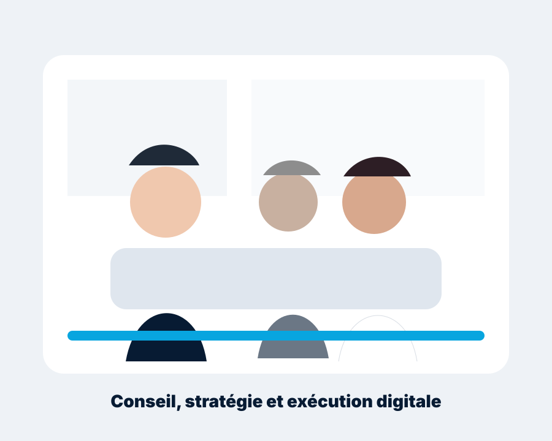

L’agence
Une vision digitale utile, exigeante et accessible.
YMKEN Solutions associe conseil, créativité et ingénierie pour traduire les ambitions de ses clients en expériences numériques cohérentes.

YMKEN Solutions
La stratégie précède toujours la production.
Notre approche réunit design, technologie, marketing et accessibilité autour d’un même objectif : construire des solutions fiables et durables.
- Écoute et compréhension du besoin métier.
- Conception d’expériences simples et cohérentes.
- Exécution technique exigeante.
- Amélioration continue.

Mot du président
Construire le digital avec sens.
« Chez YMKEN Solutions, nous plaçons l’écoute, l’utilité et la qualité d’exécution au cœur de chaque collaboration. Notre ambition est de concevoir des solutions numériques qui servent durablement les organisations et leurs publics. »
Nadi Tarik
Fondateur / Président
YMKEN Solutions